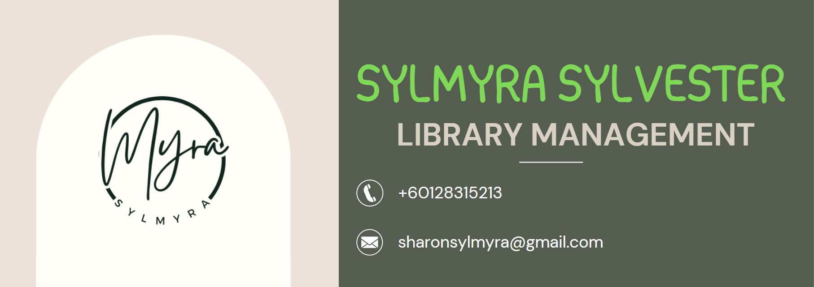
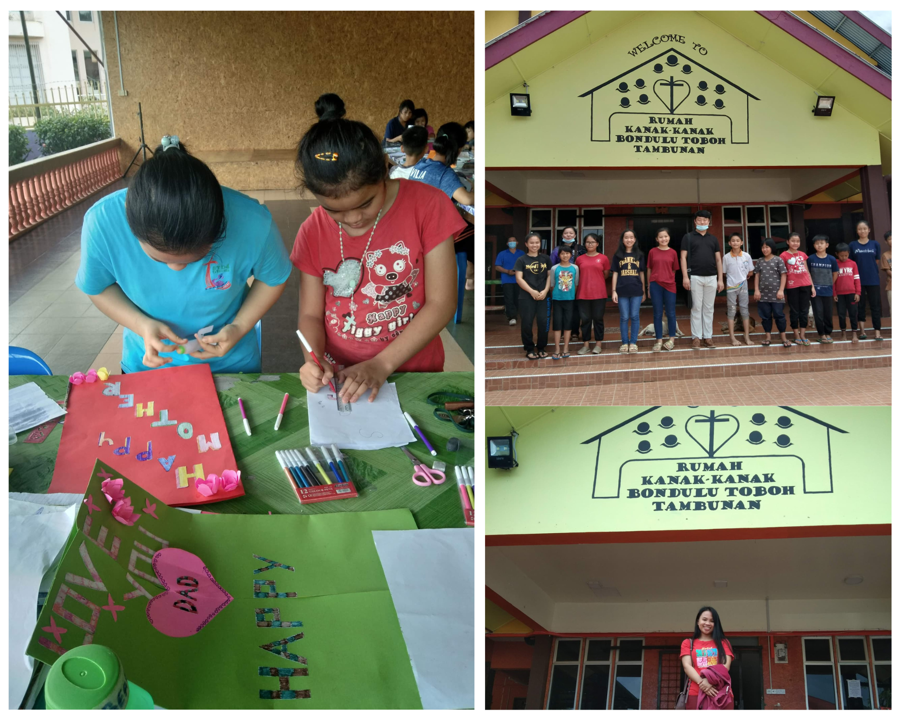
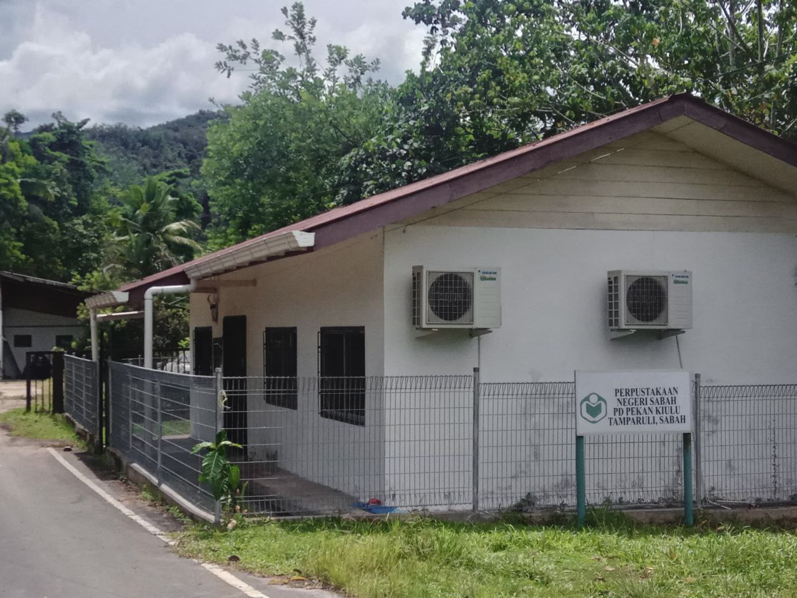

|

Home Sylmyra Sylvester Education Work Experience Skills Contact |
🌟 WORK EXPERIENCE 🌟✧･ﾟ: *✧･ﾟ:* Rumah Kanak-Kanak Bondulu Toboh *:･ﾟ✧*:･ﾟ✧✧･ﾟ: *✧･ﾟ:* Tambunan, Sabah *:･ﾟ✧*:･ﾟ✧ ◦ Developed Strong Organizational Skills: Efficiently maintained hostel facilities and resources catering to children. ◦ Developed Strong Management Skills: Proficiently planned and oversaw various activities and routines within the hostel to ensure smooth operations and resident well-being. ✧･ﾟ: *✧･ﾟ:* Perpustakaan Negeri Sabah PD Desa Pekan Kiulu *:･ﾟ✧*:･ﾟ✧✧･ﾟ: *✧･ﾟ:* Tamparuli, Sabah *:･ﾟ✧*:･ﾟ✧ ◦ Assisted with Cataloging Books: Helped classify, label, and shelve new books for easy access by patrons. ◦ Helping Patrons Find Resources: Guided visitors in finding books and using library computers and databases. ◦ Helping in Organizing Community Events: Planned and promoted events like book readings and workshops, ensuring they ran smoothly. |
|
© 2024 Sylmyra Sylvester This website is for the purpose of assignment on HTML only. Recommended browser Google Chrome. Resolution 1366 X 768. Last update on June 28, 2024 Last update on June 28, 2024 |
{kind=link}
{kind=link}